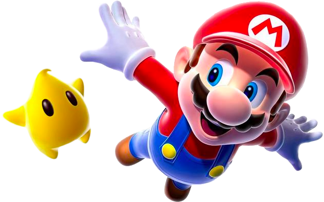

SUPER MARIO BROS. - 1985
Super Mario Bros. 2 - 1988
Super Mario Bros. 3. - 1990
S U P E R M A R I O W O R L D - 1 9 9 1
S U P E R 64 M A R I O - 1 9 9 6
Super Mario Sunshine - 2002
S U P E R M A R I O G A L A X Y - 2 0 0 7
Super Mario Bros - 2012
-


-

-

-

-

- 
-